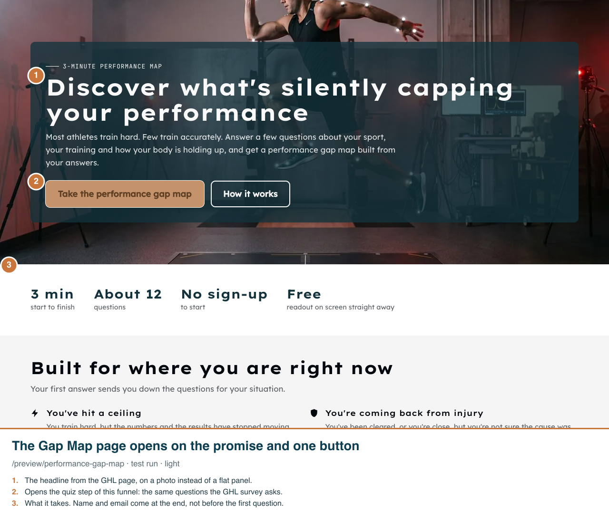
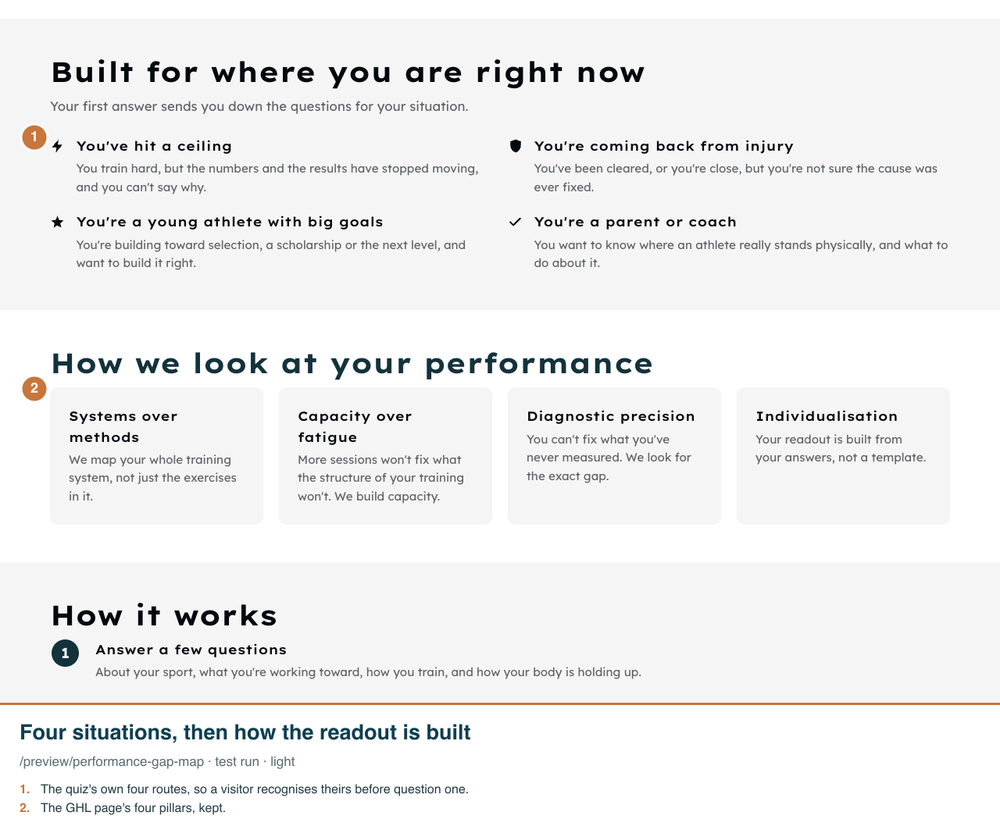
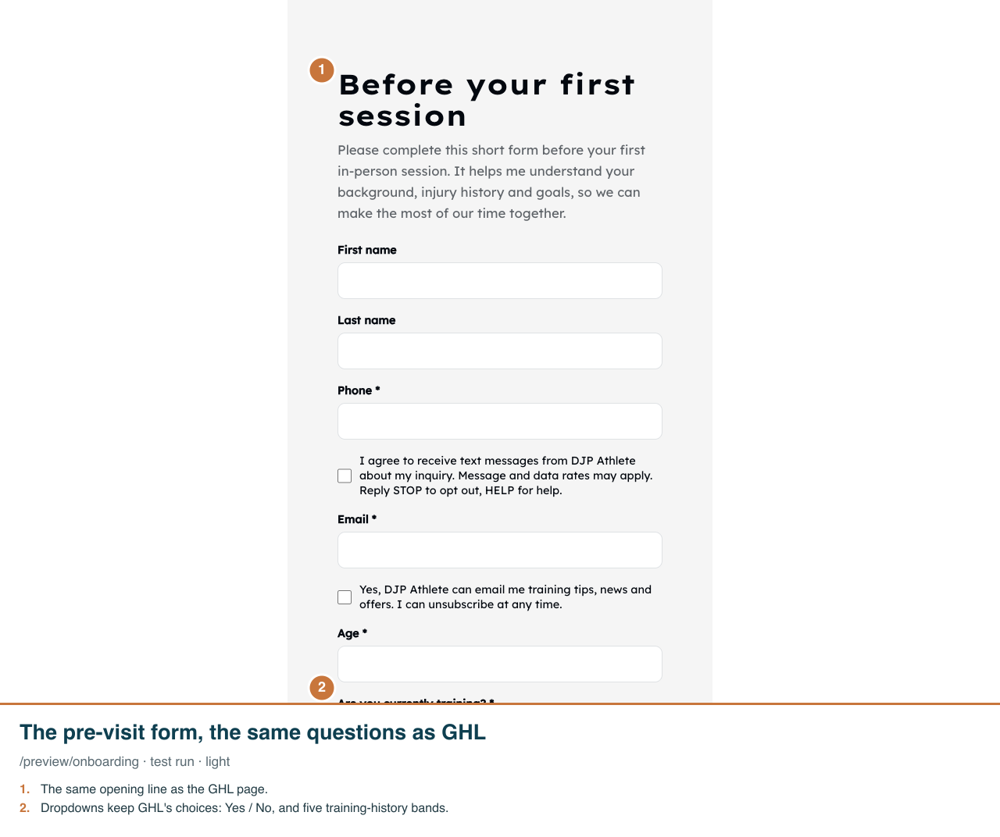
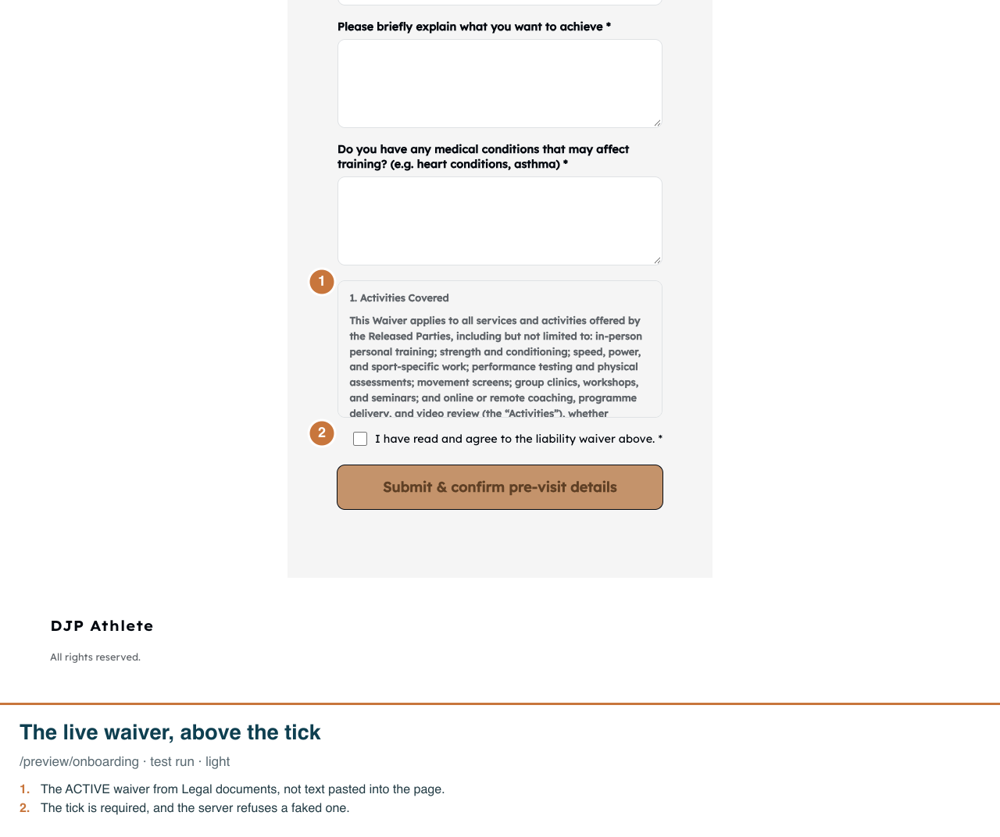
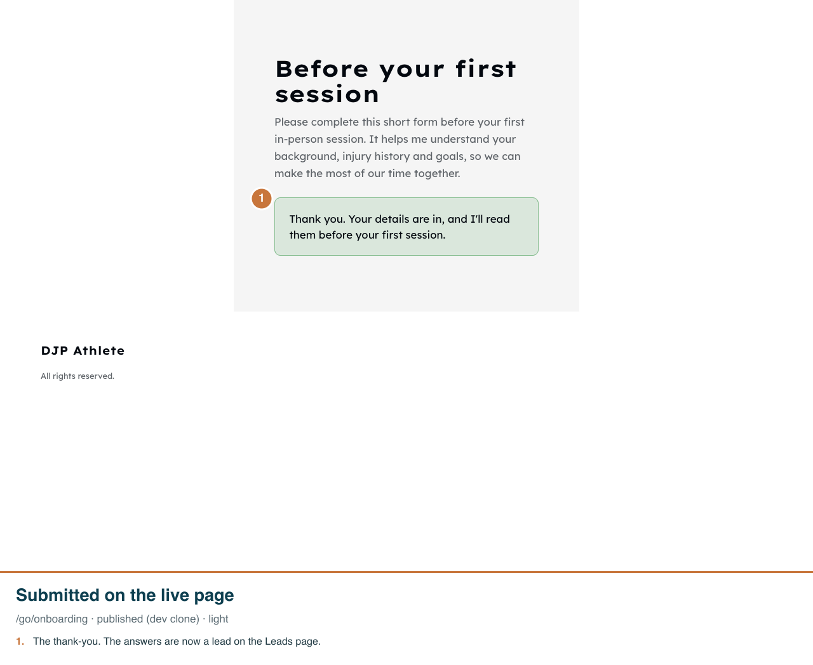
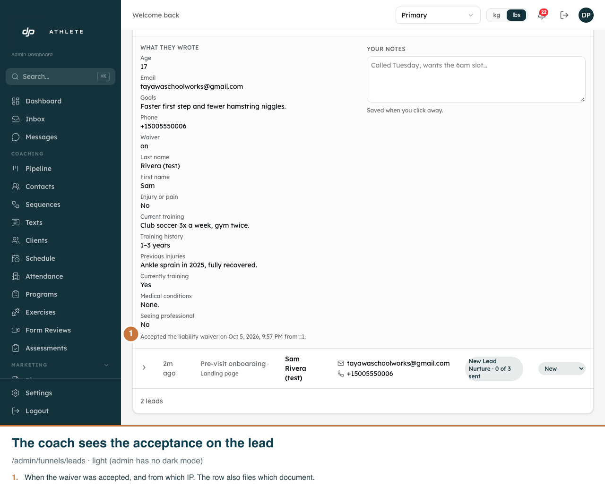

Performance Gap Map landing page, and the pre-visit onboarding form
Real app on the dev clone. Shots 1-4 and 7 are /preview test runs (nothing saved). Shots 5-6 are a real submission on the published dev page, read back from the database: waiver accepted 2026-10-05T13:57:30.773+00:00, document c334c11c-f76d-4a23-ac7d-fc851e2fc7cb. Funnel pages and the admin have no dark mode.
1. The visitor lands on the Performance Gap Map page; one button starts the quiz.

2. Lower down, the visitor finds their situation, then the four ideas behind the readout.

3. Before a first session, the client fills in this form.

4. At the end, the client reads the liability waiver and ticks to agree.

5. The client presses Submit and sees a thank-you.

6. On the Leads page, the coach opens the lead and sees the answers and the waiver acceptance.

7. On a phone the waiver scrolls in its own box, so the button stays close.